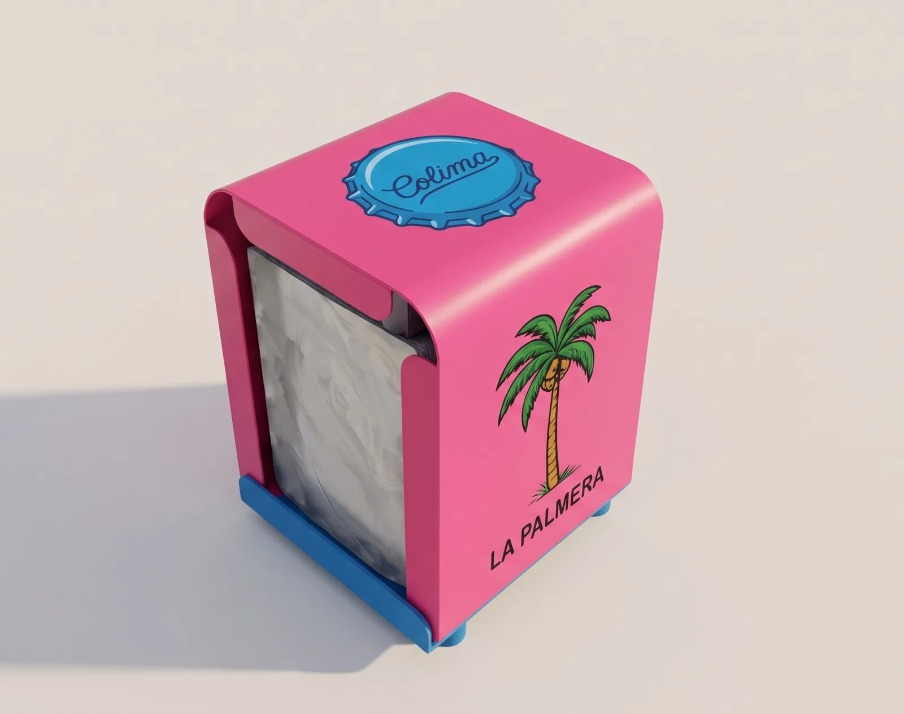
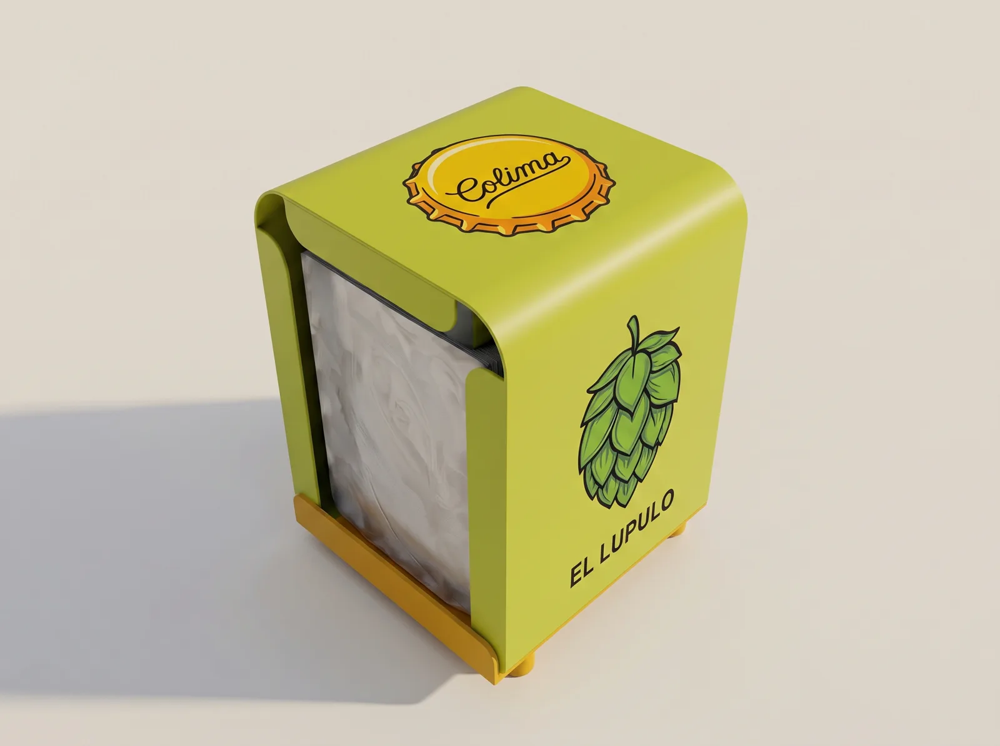
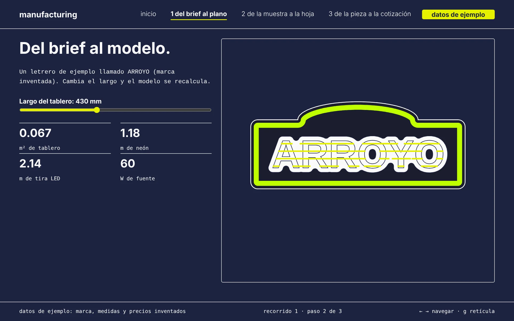
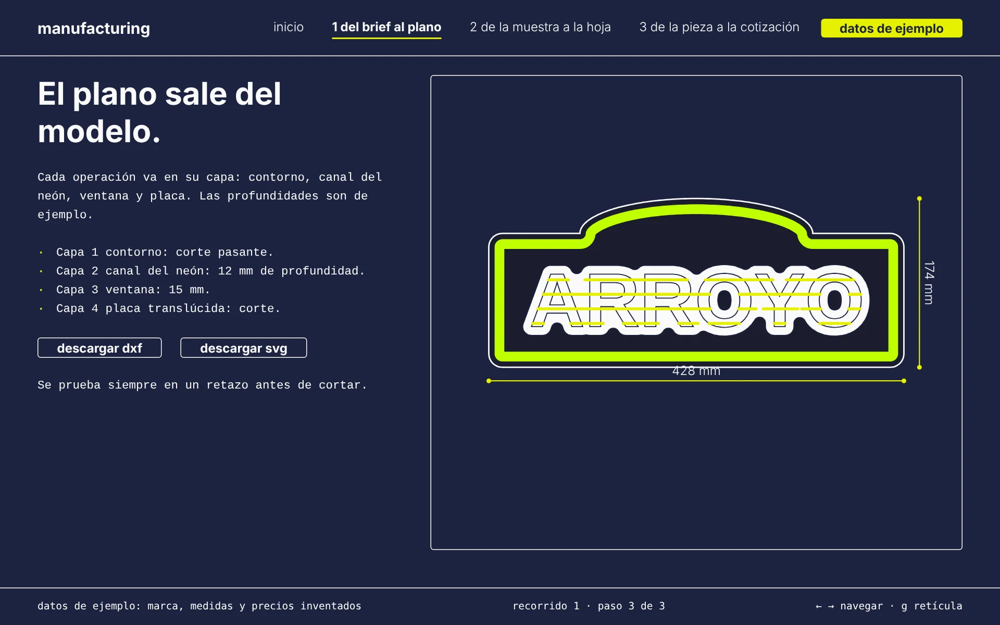
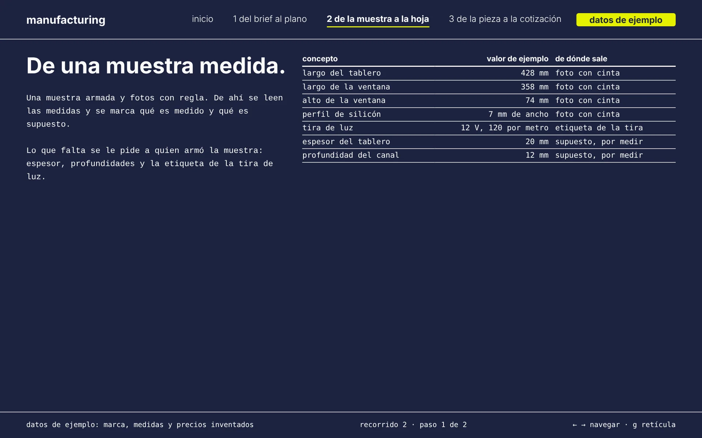
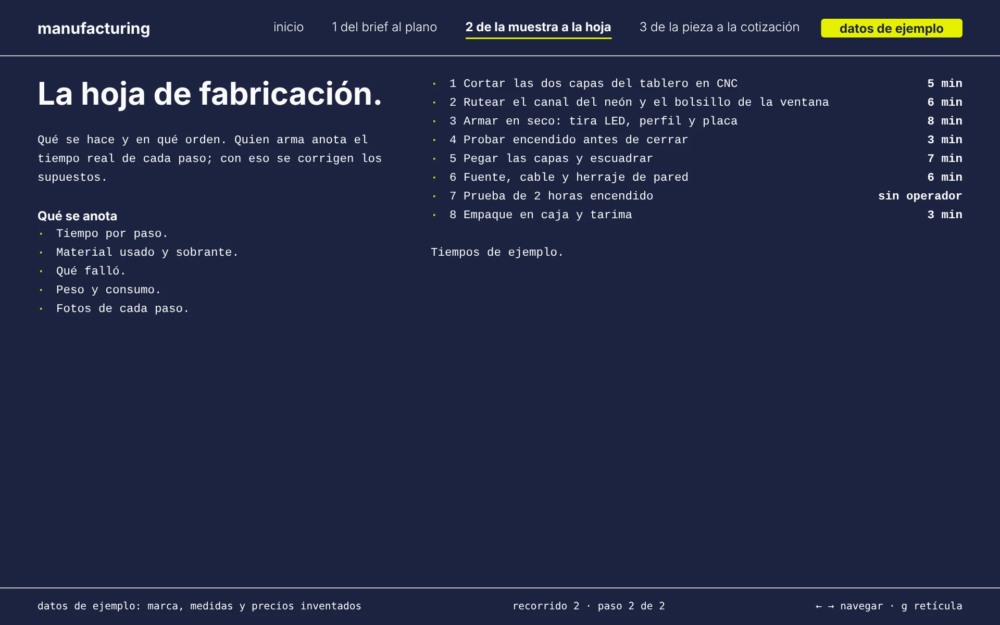
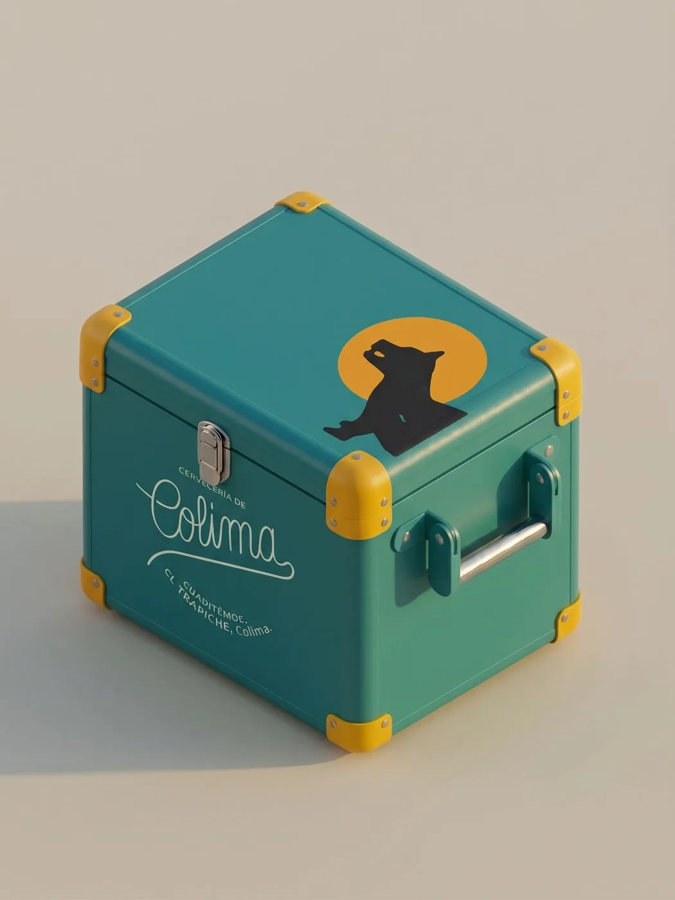

Diseño que sí se fabrica.
Diseño para fabricación y maquila para marcas, por proyecto: diseño industrial y prototipo, cotización y proveedores, producción por lote.
Servilleteros que se reconocen de lejos.
Una familia de piezas de bar con la identidad de la cervecería: tienen que verse a distancia y aguantar el uso diario.
- Pieza
- Servilleteros de bar
- Para
- Cervecería de Colima
- Material
- Lámina y metal
- Familia
- Servilleteros, hielera y destapador
- Alcance
- Diseño, render y desarrollo para fabricar en serie
Una lotería de servilleteros.
La misma pieza de lámina doblada, una carta distinta en cada mesa: la corcholata arriba y la figura al costado.


Una hielera que trabaja en la calle.
Tiene que verse bien después de meses al sol y en uso. La marca es la protagonista.
- Pieza
- Hielera de punto de venta
- Para
- Cervecería de Colima
- Material
- Cuerpo metálico
- Detalle
- Esquinas reforzadas
- Alcance
- Diseño y desarrollo para producción
Un lanyard que destapa.
La corcholata se vuelve destapador: metal cepillado con la marca grabada, colgado de la cinta de la cervecería.
- Pieza
- Lanyard con destapador
- Para
- Cervecería de Colima
- Material
- Cinta satinada y metal cepillado
- Forma
- Destapador en forma de corcholata
- Alcance
- Diseño, render y desarrollo para fabricación
Un lanyard que sirve.
Una pieza que se lleva puesta y tiene que ser útil: cinta, broche y contenedor en una sola pieza.
- Pieza
- Lanyard con tubo
- Para
- Amstel Ultra
- Material
- Cinta, broche y contenedor metálico
- Forma
- Una sola pieza
- Alcance
- Diseño y desarrollo para fabricación
El modelo se recalcula.
Un brief se vuelve un modelo que cambia con el largo, y de ese modelo sale el plano: una capa por operación, contorno, canal, ventana y placa. Marca y medidas de ejemplo.


Lo medido y lo supuesto.
Una muestra con regla y fotos: se marca qué es medido y qué es supuesto. Sale la hoja de fabricación, y quien arma anota el tiempo real de cada paso.


Así va hoy.
Sale del cerebro de iwi: las órdenes de esta línea y lo que cada agente entregó. Trabajando ahora: Kim.
El tablero pide tu cuenta de iwi.
- Demo pública: tres recorridos de principio a fin (brief a plano, muestra a hoja de fabricación, pieza a escala de cotización)borrador · autonomía
- Impresora 3D de barro por extrusión: modelo y estudio de costosborrador · autonomía
Cómo llegó aquí.
Del boceto al plano: cada proyecto deja una herramienta que el siguiente ya usa.
- Piezas de punto de venta
Servilleteros, hielera, destapador y lanyard para marcas de bebidas.

- Investigación de exhibidores
Reporte de exhibidores y materiales para una marca de consumo.
- Modelado paramétrico
Primera torre modelada con código: cambia una medida y el modelo se rehace.
- Bocetos isométricos
Tres exhibidores con montea y una versión híbrida.
- Pre-ingeniería de letreros
Escala de letreros luminosos renglón por renglón.
- Estructuras para prototipo
Estructuras 2D listas para cortar los primeros prototipos.
- Demo pública
Tres recorridos de principio a fin con datos de ejemplo: del brief al plano y de la muestra a la hoja.
- Este micrositio
Manufacturing en exposición, con fichas técnicas.